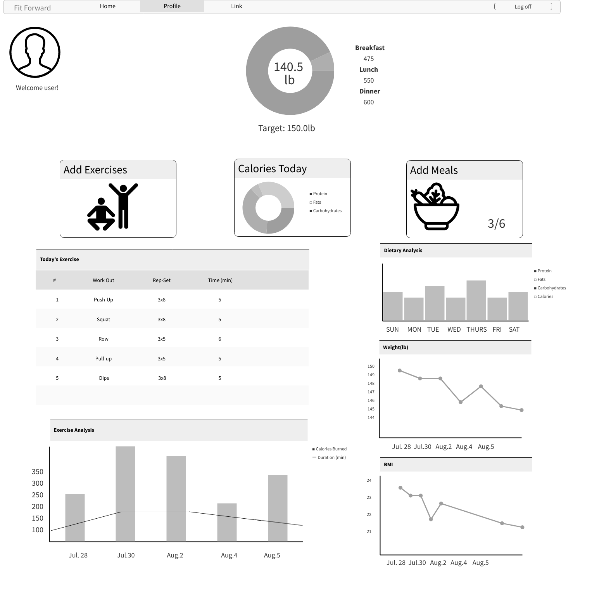

Fit-Forward will feature a dashboard which contains their logged workout and diet.
It will also feature functions such as adding exercises, meals, and inputting weight.
The reports generated to the users include:
A wireframe mock-up can be seen below.
 Previous Next